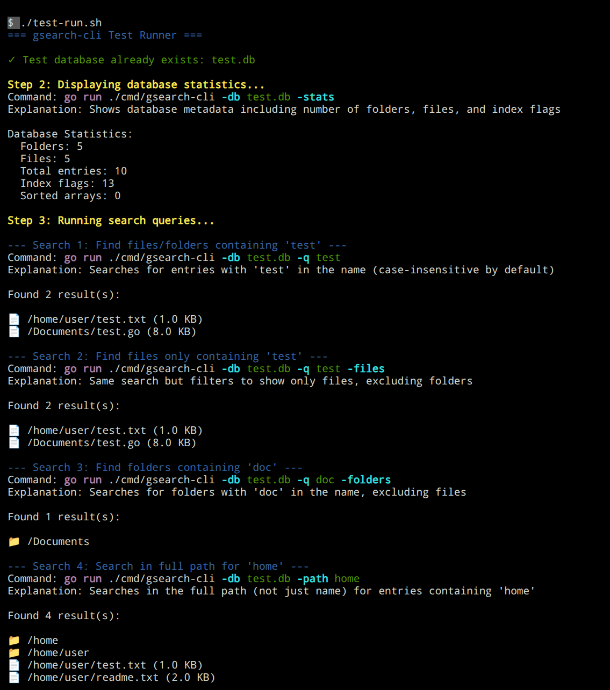

gsearch-cli
A command-line interface for searching the FSearch database. This Go application reads and searches the binary database file created by FSearch.
We build local-first software with privacy by default — tools that run close to your machine, minimize data exposure, and stay practical for real-world use.

Software should be local-first and self-contained: ideally a single executable, or one straightforward installer when needed, with dependencies kept minimal.
If an installer is required, it should install the minimum necessary and ensure 'uninstall' actually undoes everything. No traces of the software left behind.
We design for minimal data exposure: local-first behavior, clear boundaries, and sensible defaults that don’t require accounts, tracking, or unnecessary network access.
If AI is used, it runs locally by default. Cloud AI is only used when you explicitly configure it.
Tools and applications built with care for developers and users alike.

A command-line interface for searching the FSearch database. This Go application reads and searches the binary database file created by FSearch.

A modified fork of Simple Sokoban v1.0.7 updated for modern Linux, Wayland support, and BoxWorld graphics.

A beautifully simple, secure personal journal. Write freely, attach photos, and keep your memories safe with password protection and AES-256 encryption. Linux, Windows, and macOS.

A command-line tool for quickly fetching Wikipedia summaries, written in Go. Single binary, no external dependencies.
A Chrome extension that automatically collects popular posts from 15 Korean communities, learns your reading preferences with in-browser AI, and recommends posts you'll actually want to read.
15개 한국 커뮤니티의 인기 게시글을 자동으로 수집하고, 브라우저 내 AI가 읽기 패턴을 학습하여 관심 있는 글만 추천해주는 크롬 확장 프로그램입니다.

A lightweight, standalone NNTP news server written in Go. A port of the original newsd, designed for hosting private newsgroups.

Modern sticky notes for Linux with native Wayland support, written in Go. Manage multiple notes through a system tray indicator.
Create beautiful static websites without writing code. A visual editor with live preview, built-in themes, and one-click publishing. Linux, macOS, and Windows.
An open-source, Linux-first text-to-speech runtime powered by Sherpa-ONNX. Generate speech offline in Korean, Chinese, Japanese, and English using a single binary with CLI and HTTP service modes.
A local-first, privacy-first dictionary platform for Korean users and Korean learners, with both a developer-focused CLI and a desktop dictionary app.
An 80x25 fixed-grid text editor focused on robust Korean/English width alignment. Built with a Go editing core and Wails desktop shell for predictable text-cell editing.

A retro DOS communication environment that revives classic BBS access with an Iyagi + DOSBox + bridge runtime bundle for modern Linux, Windows, and macOS.
Command-line translation with multiple engines: a Go tool inspired by translate-shell — fast CLI output, optional REST service, and pluggable backends (Google, Bing, Yandex, Apertium).
A small gateway that converts modern websites into lightweight text for Gopher and Gemini clients. Give it an HTTP(S) URL and it emits a Gopher menu or Gemini (gemtext) output.